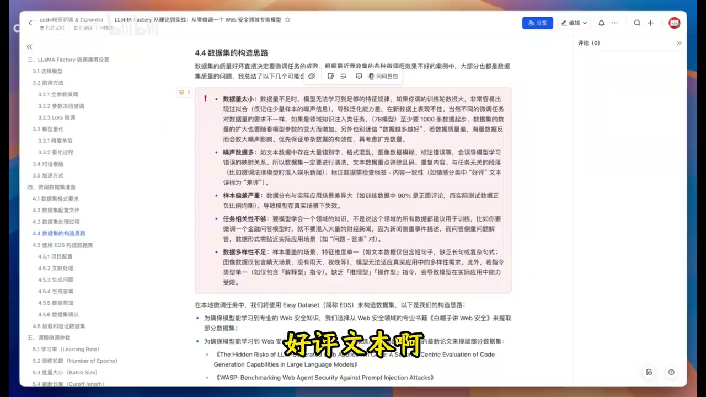

高质量数据集：先判断样本值不值得学
原视频：LLaMA Factory 微调教程：如何构建高质量数据集？ · code 秘密花园 · 约 25 分钟。以 Web 安全领域微调为教学案例，本文聚焦数据生产与质量判断，不复现训练。
一句话抓住核心
一个样本是否值得进入训练集，取决于它是否准确、独立可理解、贴近任务，并且补充了已有数据没有覆盖的能力。
推理主干
明确目标行为 → 选择可靠材料 → 正确解析与分块 → 生成问题与答案 → 人工检查 → 去重、划分数据 → 验证模型行为。
数据准备不只是把文件换成 JSON。它在决定模型将反复模仿哪些行为，以及哪些错误会被成批放大。[00:03:39]
1. 先确定要教什么，再去找材料
[00:00:20] 教学案例希望把一个较小的指令模型调整为 Web 安全助手，能回答领域问题，也能对业务与代码风险给出提示。选择领域书籍、相关研究与合成问答，都是围绕这个目标展开。
[00:10:10] 同一个领域里的材料，仍可能与目标任务不匹配。财经新闻主要描述事件，金融问答需要解决具体问题；把二者混在一起，并不会自动获得更好的问答能力。
[00:10:40] 多样性也不限于换几个同义词。解释、比较、推理、操作等指令，对应不同任务；长短句、背景完整度和使用场景，也会改变难度。
原视频演示了训练前后若干回答。它们有助于观察变化，但几条展示题不足以证明泛化、避免过拟合或全面超越另一个模型。回答更长、出现推理段落，也不能替代正确性与任务完成度的检验。
2. 格式在教模型怎样参与对话
[00:04:39] 课程介绍 Alpaca 与 ShareGPT 等数据格式。可以先把它们理解成不同的对话记录约定：谁提出要求，是否有系统说明，工具返回了什么，助手应输出什么。
[00:07:30] 工具读取数据配置后，还会映射字段、套用对应的对话模板、分词，再设置哪些位置参与训练损失。这些步骤任何一个错位，都可能让“看起来正常”的 JSON 变成错误的训练信号。
因此，检查数据至少包括两个层面：语义是否正确，以及数据被工具加载后是否仍表达同一个对话。导入预览和少量样本检查值得保留。
3. 五类问题会让数据帮倒忙

| 问题 | 直观表现 | 我如何检查 |
|---|---|---|
| 数量或覆盖不足 | 只见过一种问法，稍微变形就失败 | 看任务类型和难度分布 |
| 噪声与错误标注 | 错别字、错答案、角色或标签颠倒 | 对照来源与字段规则 |
| 分布偏差 | 训练中几乎全是某一类，真实使用却不同 | 对比目标场景分布 |
| 任务相关性不足 | 主题相关，但没有练到实际行为 | 逐题问“它教会什么” |
| 多样性不足 | 大量近似表达重复同一点 | 合并重复，补缺失场景 |
[00:08:53] 原视频给出过数据量经验值。所需样本数取决于任务、原模型和样本质量，不能把某个数量理解成训练有效的保证。
4. 生成出来的题，也需要筛选
[00:16:30] 一种扩展方法是组合内容载体与目标读者：同一知识可以写成不同结构、不同深度的内容。这样做的价值是覆盖表达与使用场景，前提是核心事实不能在改写中变化。
[00:18:20] 流程中先检查领域结构和文档分块，再生成问题。解析时漏掉表头或限定条件，后面的问答生成会沿着错误材料继续工作。
[00:19:30] 不合格问题的例子包括只问“作者的未来工作”、笼统的“文献里的数据是什么”，以及脱离原文就无法理解的“这个变量 K 是什么”。这些题即使有流畅答案，也可能没有教会目标能力。
这个筛选原则有适用范围：如果目标就是论文阅读，作者未来工作的归纳可能有价值；在这次领域助手训练中，它不符合主要目标。质量标准要与任务绑定。
5. 最后一关是判断，不能只看导出成功
[00:21:36] 生成的答案需要人工复核。原视频强调事实与材料一致、不过度超出来源、直接回答问题、保留关键条件、统一术语、合并重复，以及修正模糊表述。
例如“数据质量很高”几乎没有可执行信息。应该进一步明确：覆盖哪些情况、怎样标注、哪些条件仍未知。改成具体事实，才方便下一位审核者确认。
[00:23:23] 演示最后保留 2876 条数据并导入训练工具。这是该次案例的产量，不构成通用的推荐规模。导入成功只说明格式被接受，效果还需要独立评测。
补充判断：别把老师的自信当成正确答案
用更强模型生成样本，可以提高生产效率，也会继承它的遗漏与偏差。用户可见的推理文本也不等于可验证的内部推理过程；应围绕结果、证据和需要训练的行为进行审核。
从同一篇材料生成的近似问答，划分训练与测试时尤其要防止泄漏。否则模型可能在测试中见到换一种说法的旧答案。这个检查属于本课程补充的数据纪律。
时间戳导航
- [00:03:39] 数据质量影响训练。
- [00:04:39] 数据格式。
- [00:07:30] 字段、模板、分词与标签。
- [00:08:53] 小样本、噪声、偏差与覆盖。
- [00:10:10] 领域相关不等于任务相关。
- [00:16:30] 表达形式与受众组合。
- [00:19:30] 筛掉不适合目标的题。
- [00:21:36] 答案审核规则。
- [00:23:23] 数据导出与实际效果分开验收。
复习与行动清单
迁移练习：从一篇公开技术文档生成十个问题，先人工留下五个。给每个删除决定写一句理由，再逐句核对留下的答案。记录“有来源的事实”和“需要额外证据的推测”。
暂时不训练模型也能完成这个练习。它直接训练数据判断、标注说明和问题归因的能力。